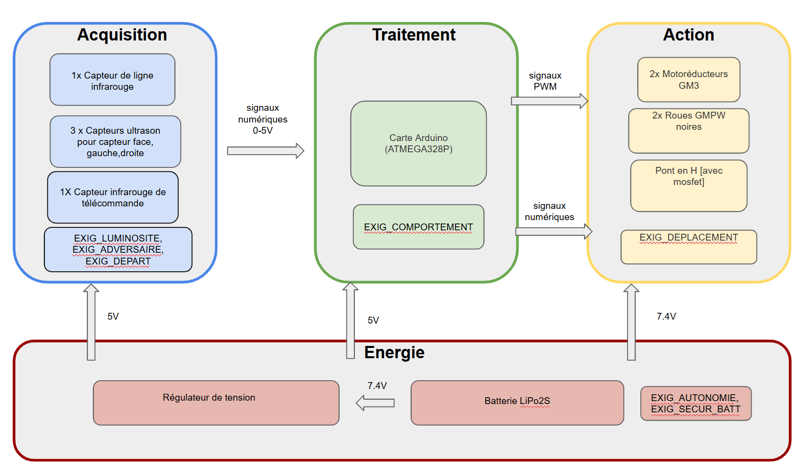
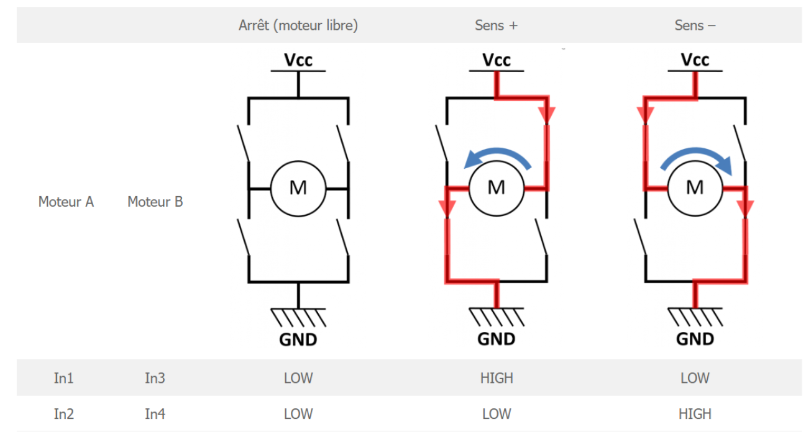
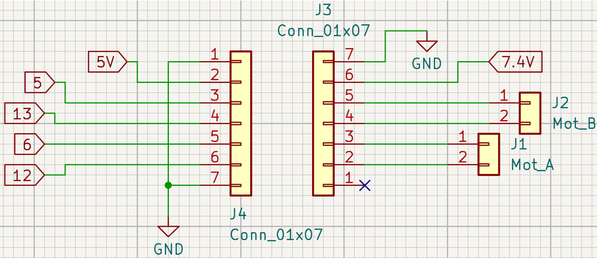
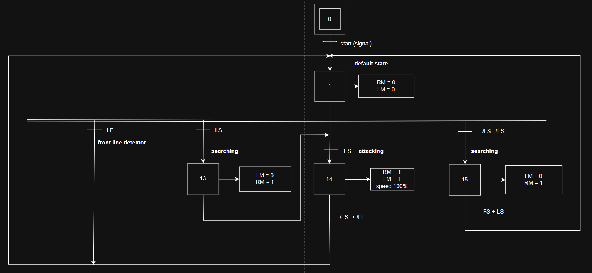
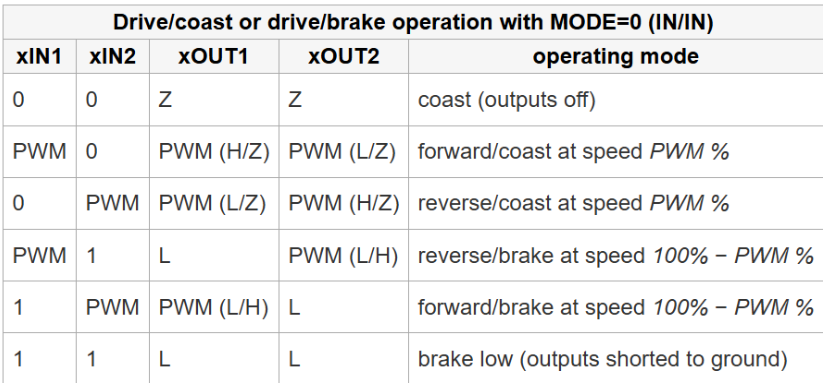
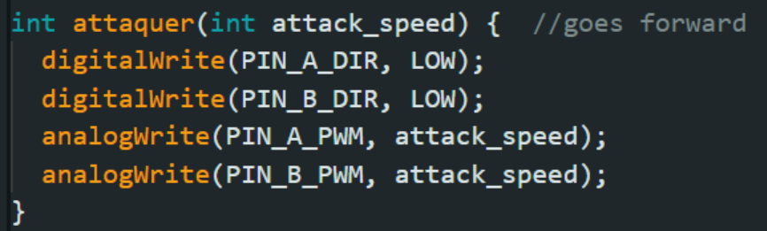
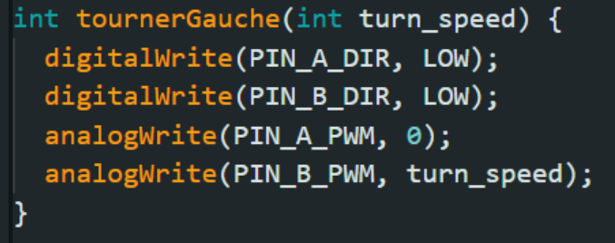
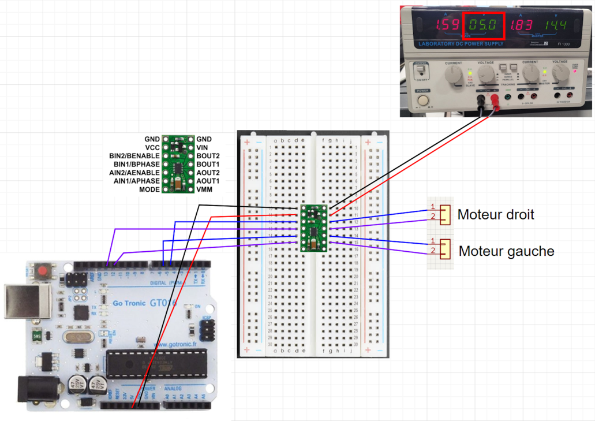
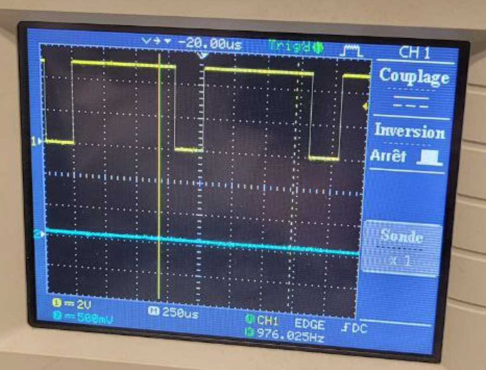
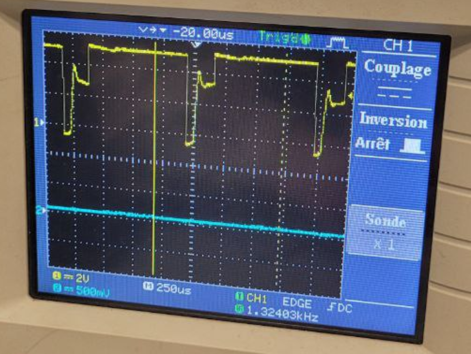

Robot Mini-Sumo
Technologie utilisée: KiCad, ISIS, Arduino, C, connaissances acquises au cours de la 1ère et 2eme année en GEII
Plus de détails techniques ont été ajoutés, lisez-les si cela vous intéresse ! Sinon, vous pouvez revenir à la « Version Simplifiée » à tout moment !
Introduction
Au cours de nos études de 3eme semestre, dans le cadre du cours SAE (Situation d'Apprentissage et d'Évaluation), on a travaillé sur un Robot Mini-Sumo, un robot qui est commande par la carte Arduino et qui va participer en combat avec autre robot mini-Sumo sur Dohyo.
Notre tâche était de créer un shield, qui va être connecter à un Arduno. Sur cette shield on devrait place les senseurs pour trouver robot adversaire ou la ligne du Dohyo, et le composant pour assurer le contrôle de la roue du robot. Dans l'équipe de 5, nous devions également créer un algorithme de combat pour notre robot qui nous garantirait la victoire.
Pour mener à bien cette tâche, nous avons dû analyser les fiches techniques des composants, concevoir le schéma électronique, faire le grafcet de l’algorithme, produire un prototype et le vérifier en effectuant plusieurs tests. Pour cela, nous disposions de 84 heures et d'un budget total inférieur à 120 euros.
Répartition du travail
Nous avions 4 modules principales à développer : énergie, acquisition d'informations, traitement d'informations et actions. Nous nous sommes répartis en binômes pour travailler sur chacune d’elles, mais comme notre équipe comptait 5 personnes, il a été décidé que je vais travailler seule sur module d’action.
J’étais donc responsable de la conception électronique et de la programmation du cette partie, ainsi que de ses tests et de sa validation sur le prototype.
Description du projet
Pour crée un shield pour robot, nous avions les exigences suivantes :
- ● Fixer la carte Arduino UNO sur le châssis, port USB à l'arrière
- ● L'énergie du robot permet un combat de 15 minutes minimum
- ● Le circuit surveille la tension et peut couper l'alimentation
- ● Le robot détecte un adversaire à 40 cm minimum
- ● Le robot reste immobile jusqu'à ce que le juge appuie sur la télécommande IRC01
- ● Le robot peut avancer, tourner à gauche ou à droite
- ● Le robot change de direction de manière autonome avec les capteurs et actionneurs
Pour plus de détails, voici l'ensemble des exigences relatives à robot :
- ● Dimensions : largeur et longueur sont Moins de 100 mm, sans contrainte a hauteur, et sans modifications sur les plaques en bois ou plastique.
- ● Masse : moins de 500 grammes, tout compris (mécanique, électronique, batterie).
- ● Mécanique : base mécanique sans de modifications des pièces déjà fabriquées, la moteur GM3 et roues GMPW imposés.
- ● Fixation : La carte Arduino UNO doit se fixer sur le châssis via les trous prévus, avec le port USB à l’arrière du robot.
- ● Temps de développement total : 84 heures (conception, fabrication, vérification, rédaction, présentation).
- ● Coût total des composants : Moins de 120 € HT pour un prototype.
Module d'énergie
- ● Autonomie : Doit pouvoir combattre 15 minutes, ou se déplacer sans obstacle pendant 65 minutes.
- ● Batterie : Priorité aux batteries LiPo2S (dimensions : 57x31x17 mm).
- ● Surveillance de la tension : Arrêt des moteurs si la tension de la batterie descend sous 6,7V.
Module d'acquisition d'informations
- ● Détection de l’adversaire : Le robot doit savoir si l'adversaire est à 40 cm minimum.
- ● Luminosité : Doit être fonctionnel en forte lumière (éclairage continu et flashs).
- ● Immobilité au départ : Le robot reste immobile jusqu'à ce que le juge appuie sur la télécommande infrarouge.
Module de traitement d'informations
Le robot change de direction en fonction des données des capteurs et contrôle ses moteurs en conséquence.
Module d'action
Le robot peut avancer, tourner à gauche ou à droite sans problèmes.
Module fabrication
Composée de composants électroniques sur PCB FR4. Un shield doit être fabriqué pour se brancher à la carte Arduino.
Composants imposés :
- ● 2 moteurs GM3
- ● 2 roues GMPW
- ● 1 interrupteur
Composants à choisir :
- ● Capteurs d'adversaire
- ● Batterie LiPo2S
- ● Pont en H
- ● Régulateur de tension
Réalisation

Architecture électronique du robot sumo
La première étape consiste à choisir les composants pour le projet. Pour partie action on a déjà impose deux motoréducteurs (moteurs) et roues noires, donc je devrais trouver comment on peut les commander.
Apres lecture des fiches techniques des composants proposés, j’ai décidé que on besoin une interface de puissance, nomme pont en H.

Modes de fonctionnement d’un moteur à courant continu
On peut contrôler les moteurs de façon comme indiqué sur l'image avec pont en H.
On a comparé les composants propose : les deux Pololu. On savait que sur l'entrée logique, donc du côté du microcontrôleur Arduino, nous aurons une tension de 5 V, et sur côte de batterie nous aurons la tension de 7,4 V. Selon les datasheets, on est sûr qu’ils supportent une tension de 3 à 5 V sur entrée logique et ils conviennent à tension d'alimentation du moteur de notre projet.
Selon la documentation de GM3, courant de décrochage du moteur est 400mA et courant à vide est quelque part entre 50 et 60mA. Nous avons conclu que, car nous avons 2 roues, on a besoin d'un courant de 800mA. Les Pololu ont un courant maximum de sortie suffisant, avec 1,2A par moteur au minimum.
J’ai décidé de prendre Pololu Commande de 2 moteurs CC DRV8835, car il a répondu aux spécifications de base demandé, et il est plus petite taille avec moins de broches.
De plus, il dispose de plus d'options de contrôle car il a deux modes de contrôle, PHASE/ENABL et IN/IN.

Schéma détaillé de la partie d’action
Comme Polulu est un petit circuit imprimé, on a besoin de connecteurs pour le connecter au shield. Nous avons utilisé deux connecteurs à 7 broches qui seront reliées à des broches du microcontrôleur du Arduin, ainsi qu’à une batterie, puis il nous faut 2 connecteurs pour les moteurs.
J’ai consulté la documentation du Polulu pour faire un bon routage du schéma. Le mode « PHASE/ENABLE » nécessite une connexion supplémentaire, donc on a décidé de travailler en mode IN/IN, qui aussi offre un meilleur contrôle des moteurs.
Programmation
Tout d'abord, nous avons réalisé un grafcet illustrant le fonctionnement du robot :

Grafcet de l’algorithme du robot mini-sumo
Toute la programmation a été réalisée dans Arduino.io à l'aide du langage C (Arduino). Pour ma partie, j’ai créé les fonctions qui permette a robot du avancer, tourner à gauche et à droite, puis stopper si on besoin.
Pour faire ça, j’ai consulté une documentation en regardant le tableau :

Fonctionnement en marche avant/arrière ou en marche avant/freinage avec MODE=0 (IN/IN)
Sure les fonctions on utilise définit valeurs des vitesses, avec les valeurs du 0 à 255 (vitesse maximale).

Fonction d’attaque
La fonction d’attaque attaquer(int attack_speed) prend comme entrée un valeur du vitesse d’attaque, et l'écrit pour les broches PWM définit avant. Les broches du direction (DIR) sont écrites avec etat LOW, donc 0, comme indiqué sur la documentation.

Fonction du tourner à gauche
La fonction avec laquelle on va tourner à gauche, et le même principe est présent sur fonction pour tourner à droite. Elle prend la valeur de la vitesse comme entrée, et l'utilise en broche PWM du moteur droit (PIN_B_PWM). On écrit la 0 sur la broche PWM du moteur gauche, donc il ne tourne pas. Avec ça, le robot va tourner à gauche. Les digital pins sont écrits sur LOW et LOW respectivement.
Dérisquage
Avant la production on devrait vérifier que les composants marchent. Donc j’ai réalisé les essais pour compléter cette partie.

Schéma du dérisquage d’action
En utilisant le schéma du dérisquage et procédure d’essai, j’ai connecté pont en H a Arduino et robot, que permettre de vérifier travail du code et du robot lui-même.
Procédure était suivante :
Le montage commence par placer le Pololu DRV8835 au centre du breadboard, en alignant chaque pin sur la ligne unique, avec les deux carrés en haut de la carte. Les fils sont ensuite connectés à chaque pin, à l'exception des broches Mode et VMM. Sur le côté gauche, toutes les broches doivent être reliées à un Arduino. Ensuite, des sondes sont connectées aux canaux CH1 ou CH2 du générateur, en ajustant la tension à 5V, et les sondes sont branchées aux fils GND et VCC du côté moteur. Les connecteurs du moteur sont reliés aux broches BOUT1 et BOUT2 pour le moteur droit, et AOUT1 et AOUT2 pour le moteur gauche, en veillant à orienter les lignes des connecteurs vers le haut. Enfin, l'Arduino est connecté au PC pour télécharger le code, et après alimentation du générateur, le robot doit se mettre à avancer tout droit si le code est correctement chargé.
Les essais permettre d’avoir les signaux d’un Arduino et les signaux sur les moteurs :

Tension sur la pin Arduino
Par exemple, ici on peut avoir un signal envoyé par Arduino, son tension et fréquence.
On a fait les calculassions de l’erreur de tension, et du rapport cyclique du signal, qui était sur la plage de tolérance définit par moi-même.

Tension sur la pin moteur
C’est la tension sur un de moteurs, avec un bruit normal dû à la commutation du moteur.
Il n’y a pas d’overshoot excessif observé.
Étant donné que nous continuons actuellement à travailler sur le projet, une partie de la fabrication du prototype et de sa vérification, ainsi que la conclusion, seront ajoutées ultérieurement, avec les documents du projet.